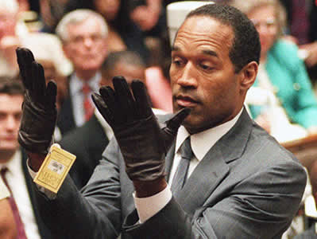

Simpson judge OKs jury prospects who admit bias
The pool of prospective jurors in the O.J. Simpson civil trial split along racial lines Tuesday, with whites saying Simpson was probably guilty of murder and African-Americans saying he is innocent.
Full storyThe Verdict
- A multi-media view of the verdict: | images | sound | movies
 Simpson verdict opinion poll
Simpson verdict opinion poll- Jurors say evidence made the case for Simpson - October 4
- Sobbing, elation at Simpson verdict - October 3
- The case for the prosecution - October 3
- The case for the defense - October 3
- The verdict: how the defense prevailed - October 3
- The numbers behind the case - October 3
- "Trial of the century" ends with Simpson's acquittal - October 3
The Reaction
- Many women outraged at O.J. verdict - October 4
- Simpson camp rejoices while adversaries grieve - October 4
- Simpson trial draws jeers 'round the world
- The case for the defense - October 3
- Politicians speak out on Simpson verdict - October 3
- Champagne and hugs greet Simpson at home - October 3
What's Next
- Simpson may get custody of the children - October 4
- What's next for O.J.? - October 4
- Simpson trial's bit players become deal makers - October 3
- Justice Department looks into Fuhrman tapes - October 3

The Verdict
The Suspect

The Victims

The Murder
The Arrest
The Evidence
The Players

The Trial

Other Views
More Stories
- Two years later, Simpson story still being played out - June 12
- PIs offer Simpson free sleuthing - May 29
- Simpson depositions winding down - May 26
- Simpson defends himself at Oxford - May 15
- IRS slaps lien on O.J. Simpson's mansion - May 14
- Fuhrman mum in deposition for Simpson civil suit - April 29
- Nicole Simpson planned sexual encounter with Goldman, friend says - April 2
- Former O.J. juror says she was victim of jury tampering - April 1
- Officials probing possible jury tampering in Simpson trial - March 30
- Furhman deposition delayed in Simpson case - March 26
- Darden criticizes most players in Simpson case, but not Clark - March 16
- Darden criticizes most players in Simpson case, but not Clark - March 16
- Simpson recalls day of murders - March 5
- Simpson denies events in ex-wife's diary - March 3
- Simpson trial date moved to September - March 1
- 'Kato' says Nicole predicted her murder - February 28
- Simpson's attorney angry over publicity - February 28
- No settlement, Goldman family says - February 27
- O.J.:He said...They said - February 6
- Kim Goldman says she hates O.J. - February 5
- Simpson case: Goldmans to be questioned - February 5
- Simpson makes spontaneous call to "Burden of Proof" - February 5
- O.J. talks to CNN: Simpson makes spontaneous call to "Burden of Proof" - February 5
- Ron Goldman's sister questioned about her brother - February 5
- Simpson case: Goldmans to be questioned - February 5
- Simpson: Nicole invented abuse charges - February 3
- Source: Simpson alibi conflicts with limo driver's testimony - January 31
- Simpson deposition postponed for a week - January 26
- Simpson: 'I couldn't kill anyone' - January 25
- Simpson keeps low profile during day 3 of deposition - January 24
- Goldman says hopes lifted by Simpson questioning - January 23
- Simpson begins deposition in wrongful death suits - January 23
- Simpson arrives to begin deposition - January 22
- O.J. Simpson to speak to the court in civil cases - January 21
- Judge clears hurdle to Simpson deposition - January 16
- O.J. Simpson deposition postponed - January 5